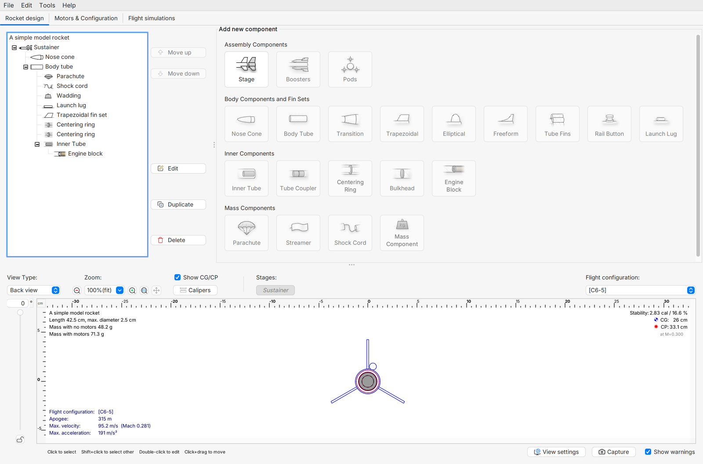
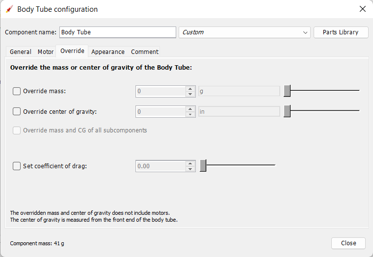

Taller 1: medidas, encajes y alineación
Comprobar piezas físicas y corregir el diseño antes del montaje definitivo.
Qué debe llegar a la mesa de cada equipo
Este es el primer encuentro presencial de cuatro horas. El trabajo comienza con tubos identificados, narices o muestras de encaje, aletas, un útil y los archivos correspondientes. Todavía no se trata de cerrar el cohete. Se trata de descubrir diferencias entre lo dibujado y lo fabricado cuando aún se pueden corregir.
Material listo antes del taller
| Objeto | Estado esperado |
|---|---|
| Tubo | Identificado, sin deformación evidente |
| Muestras de encaje | Etiquetadas con su revisión |
| Aletas o plantillas | Contorno y medidas declarados |
| Útil | Compatible con el tubo previsto |
| Archivos | CAD, laminador y .ork disponibles |
El docente prepara una estación de medición y otra de presentación. Cada equipo mantiene un responsable del objeto y otro del registro. Al intercambiar tareas se evita que una sola persona aprenda a usar las herramientas mientras los demás observan.
Un taller con varias estaciones funciona cuando todos conservan el nombre de la pieza y el significado de la medida. El mismo número puede corresponder al diámetro exterior, al interior o a una cota del plano. Antes de registrar una cifra, el alumno señala el lugar que está midiendo. Otro compañero verifica la referencia y anota la unidad. Este intercambio sencillo evita muchas correcciones de CAD que en realidad nacen de haber comparado dimensiones diferentes.
Estación de medición: un dato que otro pueda repetir
Antes de medir se comprueba el cero del instrumento, la unidad y las superficies que se tomarán como referencia. El calibrador se apoya sin deformar el tubo. Una pieza ovalada puede ofrecer valores diferentes según la orientación. No se elige únicamente la lectura que coincide con el archivo.
Registro de una interfaz
| Dato | Qué escribir |
|---|---|
| Tubo | Identificador y orientación de medida |
| Abertura | Dimensión observada y unidad |
| Muestra | Identificador y dimensión real |
| Encaje | Entra, se traba o presenta juego |
| Revisión | Cambio que se propone y motivo |
La muestra no se comporta como el CAD
Ejercicio: dos muestras se dibujaron iguales, pero una entra y otra no.
Razonamiento del caso
Compara primero dimensiones reales, borde, acabado y referencia del tubo. La igualdad de archivos no demuestra igualdad de objetos. Cambiar un número sin identificar la diferencia puede ocultar el problema.
Si el borde está dañado, registra esa condición antes de trabajar sobre él. Después de preparar una superficie según el método del taller, repite la comprobación y conserva el antes y el después. Así la corrección tiene un motivo visible.
Una lectura repetida desde la misma referencia ayuda a encontrar errores de apoyo o de manipulación. Si dos compañeros obtienen resultados diferentes, primero comparan cómo colocaron el instrumento. El objetivo de esta estación no es calcular una estadística avanzada, sino que ambos sepan describir la misma dimensión de la misma pieza. Se puede anotar el intervalo observado sin esconder la diferencia en un promedio que nadie sabe interpretar.
En el calibrador se comprueba primero el cero y se eligen las superficies de contacto que corresponden a la medida. El instrumento debe apoyarse sin deformar la pieza. Si el tubo parece ovalado, se observa más de una dirección y se identifica cómo se tomó cada lectura. La balanza requiere una condición igualmente clara: recipiente o soporte, puesta a cero y componentes incluidos. La calidad del registro depende tanto de estas condiciones como del número de decimales que muestra la pantalla.
Estación de presentación: el conjunto sin pegar

- Presenta la nariz y el cuerpo para observar continuidad y longitud exterior.
- Coloca el útil sin forzar el tubo. Presenta todas las aletas según su referencia.
- Observa la distribución desde atrás y la posición desde un lateral.
- Comprueba que ninguna pieza haya quedado invertida o en una referencia diferente al plano.
- Fotografía las vistas necesarias y escribe un resultado concreto por vista.
La presentación también permite discutir cómo sostener el objeto mientras se fabrica. Si el útil impide acceder a una unión o tapa una referencia necesaria, debe corregirse. Una herramienta de montaje se evalúa por el trabajo que permite hacer.
Actualizar el modelo desde la pieza

Una pieza puede conservar la geometría dibujada y tener una masa diferente a la estimada. Antes de introducir la medida en el programa, se define qué se pesó: pieza sola, conjunto o pieza con acabado. Si se ajusta la masa de una pieza y además se añade otra masa que representa lo mismo, el modelo la cuenta dos veces.
- Pesa la pieza identificada y anota qué incluye.
- Compara el resultado con la estimación del modelo.
- Actualiza la representación de esa pieza según la versión del programa.
- Revisa el total y conserva una copia anterior.
- Añade en el comentario la fecha y el origen de la medida.
No se utiliza el ajuste de masa para obtener un resultado de vuelo deseado. Se utiliza para representar mejor el objeto que se está construyendo. [OR1]
Una masa calculada y otra pesada responden a métodos diferentes. Si la geometría y el material del archivo producen una estimación, se conserva su origen. Si el equipo pesa una pieza, anota si incluye pintura, unión o accesorio. El ajuste del modelo usa esa medida solo cuando corresponde a la pieza y a la condición representadas. Una corrección de masa puede mejorar la representación sin corregir todavía el encaje o la forma física.
Cómo se reparten las cuatro horas
Horario del taller 1
| Minutos | Trabajo | Producto |
|---|---|---|
| 0–30 | Demostración de herramientas y referencias | Todos reconocen las medidas |
| 30–105 | Medición y series de encaje | Ficha por interfaz |
| 105–180 | Presentación, útiles y correcciones | Fotos y cambios propuestos |
| 180–240 | Actualización digital y revisión | Plano y archivo revisados |
Las impresiones largas se preparan fuera del encuentro. Durante la sesión se priorizan comprobaciones, correcciones de archivo y, si el equipo lo permite, una muestra corta. El docente dispone de piezas de reserva para que un fallo de impresión no impida aprender a medir y revisar.
Una corrección documentada
El hombro se traba solo al final del recorrido y la medida inicial parecía correcta.
Razonamiento del caso
Revisa el tramo completo y el borde, no únicamente la entrada. Registra dónde aparece el problema. El nuevo archivo debe mostrar qué dimensión o forma se corrigió y qué muestra comprobará el cambio.
Al terminar una estación, otro integrante explica el resultado. No basta mostrar la fotografía: debe indicar qué decisión se tomó y qué evidencia la respalda.
Las correcciones se agrupan por causa para no gastar la impresora en cambios sin comprobar. Por ejemplo, una familia de muestras puede resolver un diámetro de encaje y otra un apoyo del útil. Antes de solicitar una nueva impresión, el equipo muestra la diferencia observada, el cambio de archivo y la comprobación que hará al recibirla. El docente puede entonces decidir qué muestra pequeña responde mejor a la pregunta del taller.
Qué queda listo para la clase siguiente
El taller termina con un conjunto que puede presentarse de forma coherente y con sus correcciones pendientes identificadas. Aún faltan integración final, recuperación y revisión para vuelo. El próximo bloque utilizará las piezas y masas conocidas para entender la estabilidad del modelo completo.
Salida del taller
| Entrega | Revisión breve |
|---|---|
| Ficha de encaje | Tubo y muestra identificados |
| Medidas y masas | Unidad y objeto pesado claros |
| Fotografías | Vista lateral y posterior |
| Archivos | Misma revisión que la pieza |
| Pendientes | Responsable y comprobación siguiente |
Pieza que no debe pasar sin revisión
Una aleta presenta una separación visible entre capas, aunque entra en el útil.
Razonamiento del caso
El ajuste al útil no resuelve la integridad de la pieza. El equipo deja la aceptación pendiente y revisa fabricación o reemplazo con el docente. Cada comprobación responde una pregunta distinta.
Investiga una diferencia entre tu primera predicción de encaje y el objeto real. Explica qué aprendiste del proceso y qué cambiarías en la siguiente impresión. La entrega debe permitir que otra persona repita tu comprobación.
Preguntas de cierre
¿Una pieza que entra en el útil ya está aceptada para vuelo?
No. El encaje es una comprobación parcial.
¿Qué incluye una masa medida útil?
Identificador, unidad y descripción de las piezas o acabado incluidos.
¿Qué se conserva al corregir?
Dato anterior, cambio y nueva comprobación.
Entrega
Ficha completa, fotografías, plano y .ork corregidos.
Bibliografía y procedencia
[PR1] Prusa Research. Modeling with 3D printing in mind.
[OR1] OpenRocket. Basic Rocket Design.
[NASA] NASA Glenn. Model Rockets.